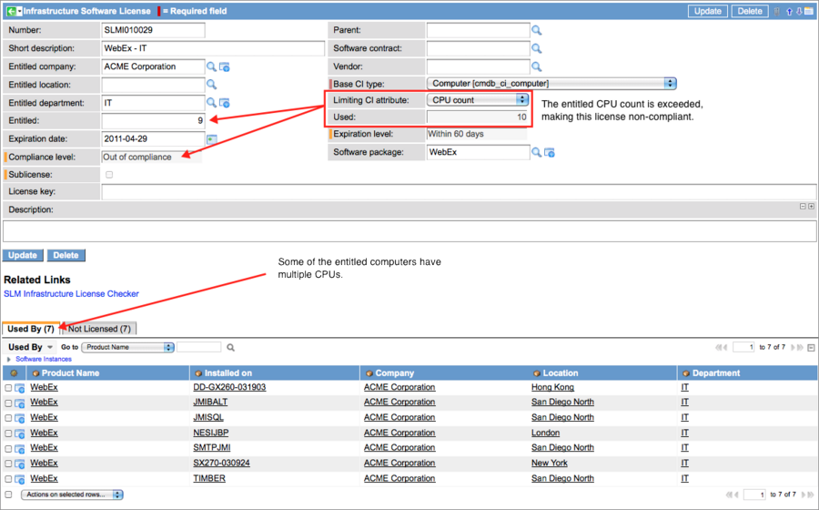

Infrastructure Software Licenses
Contents
1 Overview
The infrastructure software license module tracks compliancy and expiration levels for software packages installed on specific configuration items (CI), such as Linux, UNIX, or Windows servers. This functionality requires the Software License Management plugin.
The platform evaluates license usage using two sets of filters:
- The compliance filter, based on Company, Location, and Department usage. Infrastructure compliance can be evaluated for each level of an organization, from the narrow focus of CI types in a single department to CI types in an international parent organization with multiple locations.
- The selected CI type and a configured attribute, such as CPU count.
Expiration dates are tracked separately in the same form.
2 Compliance Filter
The compliance filter for infrastructure licenses uses the following locality fields to define entitled CIs. Infrastructure license compliance is calculated by comparing the number of CIs using the software package in the locality with the entitled limit for that locality, regardless of how many CIs outside the locality are using the package.
- Entitled company: All configuration items (CI) at all locations of this company, in all departments are entitled to use this software package, unless other, restricting localities are defined.
- Entitled location: All CIs at this location are entitled to use this software package, unless a limiting department is defined.
- Entitled department: Only the CIs in this department are entitled to use this software package.
The infrastructure license displays information about the CIs that are using this software package. The license indicates the number of entitled users and the number of unlicensed users.
Possible compliance levels are:
- Non applicable: Compliance levels for all infrastructure licenses related to cluster licenses are set to Non applicable automatically. Compliance levels are calculated in the cluster license only, and not in the related infrastructure licenses.
- Out of compliance: More licenses are being consumed by CIs in this locality than were purchased. CIs outside the locality that are using the software package do not affect compliance.
- Unused: No CIs in this locality are using this software package. CIs outside the locality using this software package do not affect this level.
- Reconciliation required: CIs that are not entitled to use this software are consuming licenses. Licenses that require reconciliation are considered out of compliance. Reconciliation requires action to ensure that unentitled CIs are not using the software. This might involve uninstalling software or increasing license counts to match actual user counts.
- Nearly out of compliance: For a software package to be at this compliance level, more than 95% of the licenses for this software package must be in use by CIs in this locality. Licenses at this level are considered to be compliant.
- In compliance: CIs in this locality are using less than 95% of the entitled licenses for this software package. CIs outside the locality that are using this software package do not affect compliance.
3 Configuration Item Filter
Compliance for infrastructure software licenses is filtered by the following variables:
- Base CI type: Select the CI type (and all types above it in the CI hierarchy) on which this software package is entitled to be installed. Any CIs in this type or related to this type are valid configuration items. For example, the CI type of Hardware allows this software package to be installed on Computers and Servers. However, a base CI type of Servers does not include Computers. Be aware of this hierarchy before assigning a base CI type.
- Limiting CI attribute: Select a limiting attribute for this CI. For example, you might select CPU count to match the number of licenses to the number of CPUs on the installation CIs. A selection of None limits the number of installed licenses to one per CI.
When the software package is selected and the record is submitted, the platform automatically returns a list of CIs on which the licenses are being used and indicates which CIs are licensed or unlicensed for the locality.
4 Checking for Compliance
Software License Management provides a license checking UI Action to recalculate compliance levels. Click SLM Infrastructure License Checker after updating fields in the form to recalculate compliance and user levels. Only users with the slm_admin role can use the License Checker.
{kind=link}
4.1 License Compliance Checker
To check all the licenses in the system for compliance at once, select Software License Management > License Compliance Checker. The platform does not display a prompt, but calculates the compliance of each record for each license type immediately. The progress is displayed above the list.

5 Software Packages
A single software package can be used in multiple infrastructure licenses for different localities. These licenses can then be attached to a parent complex software license to track the entitled usage for the package. For example, an Adobe Download Manager package with an purchased license count of 8 can be assigned to two localities, one with an entitled license count of 3, and the other with 5 entitled licenses. The infrastructure licenses track compliance separately for each entitlement, and a complex license rolls up the totals. The entitled count in the complex license is the sum of the entitled counts from all related infrastructure licenses. The complex license is compliant only if both the related infrastructure licenses are compliant. Cluster licenses, a type of complex license, do not determine compliance in the related infrastructure licenses, but roll up all license counts into the cluster for calculation.
{kind=link}
6 Infrastructure Licenses
To create a new infrastructure license, navigate to Software License Management > Infrastructure Software Licenses and click New, or create a software license contract first as described here:
- Create a new Software License Contracts for the software package.
- In the Software License Bases Related List, click New.
- In the Wizard, click Infrastructure Software License.
- A blank infrastructure record opens.
- Complete the form as follows:
- Entitled localities: Enter a company, location, or department by itself or in any combination as the locality entitlement filter for this software package. Localities are used to calculate the compliance level for a software package by defining where licensed CIs must exist.
- Expiration date: Select the expiration date of this software package. The license checker updates the expiration level, but does not use this calculation to establish license compliance.
- Parent: If this infrastructure license is directly related to a complex license, it has a parent license record. Select the complex license from the list in the Parent field to establish the upward hierarchy for calculating compliance.
- Base CI type: Select a CI type from the CMDB hierarchy that exactly defines the type of CI entitled to use this software package. For example, Computer [cmdb_ci_computer] is a very broad filter that entitles any computer (server or workstation) with any operating system to use this software package. Server [cmdb_ci_server] eliminates workstations from the license, and a filter such as Linux Server [cmdb_ci_linux_server] limits the license to one type of server.
- Limiting CI attribute: Apply another level of filtering to this license by selecting a limiting attribute of the CI, such as CPU count or RAM (MB). For example, this filter might license Oracle 11i on 4 CPUs installed in Linux servers.
- Software package: Select the software package to which this license applies. This package has certain limitations, such as the number of licenses purchased, the supported operating system, or CI attribute. Each software package has some entitled locality, even if it is just at the company level.
- Save the record.
- The CIs on which this package is installed appear in the Related Lists.
- Warnings:
- Overlapping licenses for the same software package make license counts inaccurate. Make sure the system does not have conflicting filters configured for a software package.
- Do not attempt to remove any configuration item (CI) from a license by using the Delete action in a list. This option permanently deletes the CI record from the database.
- Click SLM Infrastructure License Checker to calculate the compliance and expiration level of the license and a second time to display the results.
- If you change the values in any of the filters, run the license checker again to recalculate the levels.
- To see an example of an infrastructure license, see below
6.1 Example
Acme Corporation is divided into three regions: Europe, Asia, and the USA. Each regional office has three common departments: Sales, IT, and Development. ACME has purchased some WebEx licenses to be used by its IT department. Corporate headquarters wants to monitor compliance and check the expiration level of this software package. Headquarters creates the following Infrastructure Software License record for their world-wide IT organization to determine the expiration level and license compliance status for the WebEx package. By omitting the Entitled location filter, all IT departments at all company locations are entitled to install the software package on the specified configuration item (licensed by CPU count).
{kind=link}
This record shows that:
- The IT Department has unused licenses.
- The licenses will expire within 60 days.
- The software package is installed on Sales and Development computers at other localities.
- The license is compliant. Compliance is determined by the number of entitled computers from the IT department that are using this software package compared with the number of available licenses. Unlicensed CIs (in this case from Development and Sale) are of interest, but do not affect compliance.
6.1.1 Cluster License as the Parent
If you select a cluster license as the parent, the following elements are not available on the infrastructure license form:
- Related Lists for displaying licensed and unlicensed CIs.
- License checker
- Used field for displaying the actual license count.
6.1.2 Base CI Types and Limiting Attributes
The previous infrastructure license was evaluated on the basis of one license per Base CI type - computers in this case. When a Limiting CI attribute, such as CPU count is applied, the number of licenses used is based on the number of entitled CPUs. In this example, some of the computers have multiple CPUs, which exceeds the entitled license count, and makes the license non-compliant. To resolve the issue, the administrator moves the software to another computer with fewer CPUs or upgrades the license to accommodate the actual CPU count.
 |}
{kind=link}